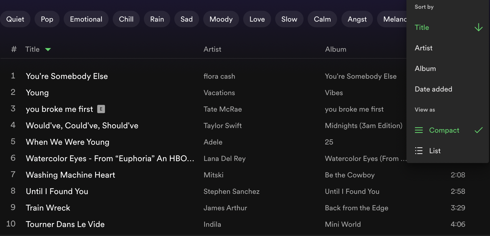

<!DOCTYPE html>
<html lang="en"></html>
<html>
  <head>
    <title>Development</title>
    <link rel="stylesheet" href="styles.css" />
  </head>
</html>
<header>
  <h1>Development</h1>
</header>
<body>
  <h2>Overview</h2>
  <p>
    I will be conducting a competitive analysis between different company
    websites to get a better sense of their strengths and weaknesses in regards
    to their aggregator function. Using this information, I will be implementing
    my own web app using React with an aggregator function that contains some of
    the features shown in the observed companies.
  </p>
  <h2>Competitive Analysis</h2>
  <p>
    For the sake of this analysis, I will be observing
    <a href="https://spotify.com/">Spotify</a>
    ,
    <a href="https://pinterest.com/">Pinterest</a>
    , and
    <a href="https://goodreads.com/">Goodreads</a>

    and their usage of aggregators in their favoriting functions
  </p>
  <p>For reference, this is what the interfaces look like</p>
  <p id="label">Spotify's Interface</p>
  
  <p id="label">Pinterest's Interface</p>

  
  <p id="label">Goodreads' Interface</p>

  
  <p>
    With that in mind, I will compare different features that each interface
    contains that relates to their aggregator function. Then, from my findings,
    I will analyze the similarities and differences that contributed to each
    interface's successes and failures.
  </p>
  <table border="1">
    <thead>
      <tr>
        <th></th>
        <th>Spotify</th>
        <th>Pinterest</th>
        <th>Goodreads</th>
      </tr>
    </thead>
    <tbody>
      <tr>
        <th>Ability to Organize</th>
        <td id="No">No</td>
        <td id="Yes">Yes</td>
        <td id="Yes">Yes</td>
      </tr>
      <tr>
        <th>In-Search</th>
        <td id="Yes">Yes</td>
        <td id="No">No</td>
        <td id="Yes">Yes</td>
      </tr>
      <tr>
        <th>Bulk Edit</th>
        <td id="No">No</td>
        <td id="No">No</td>
        <td id="Yes">Yes</td>
      </tr>
      <tr>
        <th>Different View Options</th>
        <td id="Yes">Yes</td>
        <td id="Yes">Yes</td>
        <td id="Yes">Yes</td>
      </tr>
      <tr>
        <th>Drop-down filter</th>
        <td id="Yes">No</td>
        <td id="No">No</td>
        <td id="Yes">Yes</td>
      </tr>
      <tr>
        <th>Different Sort Options</th>
        <td id="Yes">Yes</td>
        <td id="Yes">Yes</td>
        <td id="Yes">Yes</td>
      </tr>
    </tbody>
  </table>
  <h3>Findings</h3>
  <p>
    Based on the features I observed and compared between each website, I
    discovered some strengths and weaknesses for each one. For example,
    Spotify's greatest strengths are its clean and intuitive design and its
    filtering options based on mood and genre that appears at the top of the
    page. Spotify had a reasonable amount of sorting options such as Date,
    Title, Artist, and Album which are all relevant to its purpose as a music
    website. Still, these options were not overwhelming and therefore, did not
    leave to a cluttered and confusing design. Further, the mood filtering is a
    very helpful tool as it allows for users to find their music that best
    corresponds to their current state. Still, users lack complete freedom in
    organizing their music by their own choosing such as by ocassion due to
    Spotify's lack of an organization feature. This is Spotify's biggest
    weaknesses as it groups all Liked songs together which may lead to an
    unpleasant listening experience to the user due to different genres, moods,
    vibes, etc. being grouped together. This greatly affects the way a user will
    interact with their Liked songs since they will not be able to listen to it
    based on their customized order.
  </p>
  <p>
    Unlike Spotify's lack of organization in its Favorites Playlist, Pinterest's
    biggest strengths is its very customizable organization feature for saved
    pins through boards and sections. This gives the user much more creative
    freedom to visualize and plan out certain recipes, outfits, aesthetics, etc.
    and thus, leads to a more user-conscious experience. However, Pinterest's
    biggest weakness is its lack of a search bar which may become a problem for
    a user when dealing with a board with hundreds of pins. This affects the way
    the user will interact with their saved pins since they may need to look
    through each pin in their boards to find the specific one they are looking
    for.
  </p>
  <p>
    Furthermore, one of Goodreads biggest strengths was a feature that was not
    found in Spotify or Pinterest which is the bulk edit feature. This feature
    allows for bulk removal and addition to other shelves which makes navigation
    much easier for the user as it reduces reptitive actions being made.
    However, one of its weaknesses was its sorting options. While Goodreads'
    extensive sorting options allows for the user to have more freedom when
    searching for certain books, this also leads to a cluttered design and
    confusion for the user. Unlike Spotify's sorting options, Goodreads sorting
    options are not all relevant or useful for a user such as isbn, asin, or
    date pub (ed.). This is information that could perhaps be used for advance
    search, however having it as sort option makes the sorting feature much less
    intuitive.
  </p>
  <p>
    Based on my analysis of the features that worked best and those that did
    not, I plan to implement the following features:
    <li>In-search</li>
    <li>Different Display options (list, grid)</li>
    <li>Hide/View Favorites Option</li>
    <li>Relevant Sorting Options</li>
  </p>
  <p>
    This is because these features seem to be the most relevant in aiding to
    make my web-app, a course manager, be the most effecient and user friendly
    it can be.
  </p>

  <h2>Functionality</h2>
  <p>
    I plan to develop a web app that has education and students in mind. I will
    be developing a course manager in which students are able to view, filter,
    and sort different courses. Additionally, students will be able to save
    courses to keep track of courses that they are interested in. The intention
    of my web app will be to provide students with a straight forward and simple
    design that makes their course shopping more easy to navigate.
  </p>
  <p>
    The course manager web app will utilize filters to allow students to filter
    by department and courses that meet the WRIT requirement since these pieces
    of information are highly important when students shop for classes. Further,
    a sorting feature could be utilized to sort by ratings of courses in which
    the highest rated courses are pushed to the top of the list. Finally, the
    aggregator for the course manager will be a favorites list in which students
    favorite courses that they are interested in taking.
  </p>
  <p>
    The web-app can be found at
    <a href="https://course-manager-pi.vercel.app/">Course Manager</a>
  </p>
  <h2>Conclusion</h2>
  <p>
    From the competitive analysis of Spotify, Pinterest, and Goodreads, I was
    able to pinpoint similarities and differences that allowed for their
    success. Further, from this analysis and the development of my own web app,
    I realized that some features may differ from other interfaces as features
    that are implemented should be relevant to the purpose of the web app and
    aware of who its users are.
  </p>
</body>
